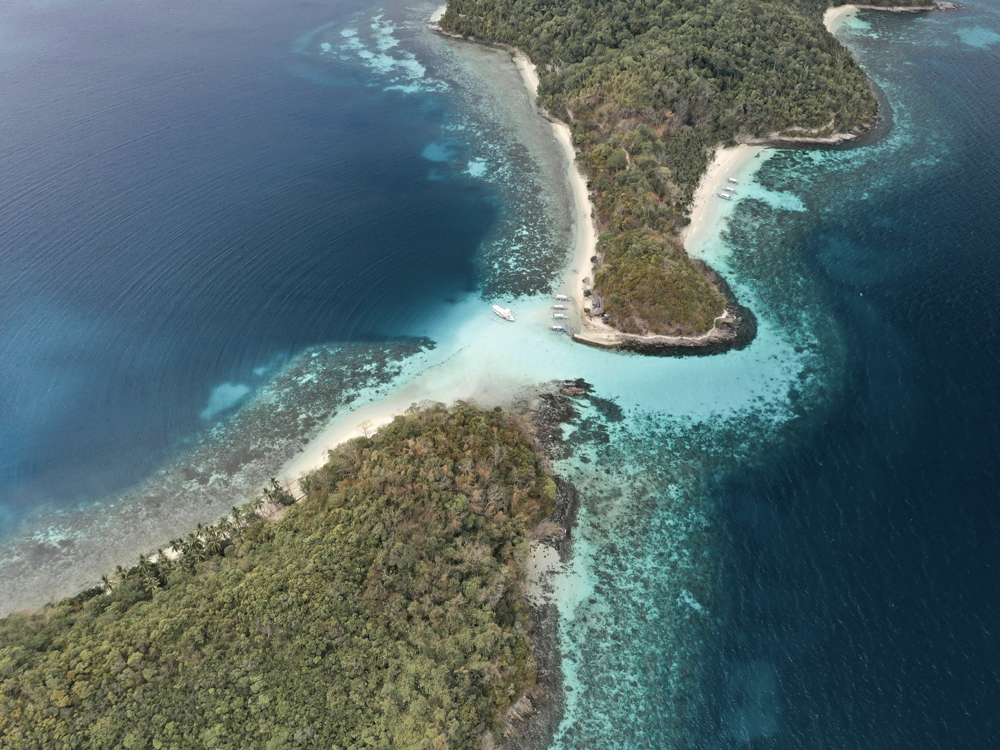
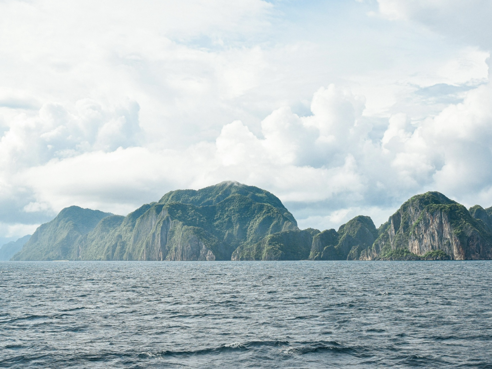
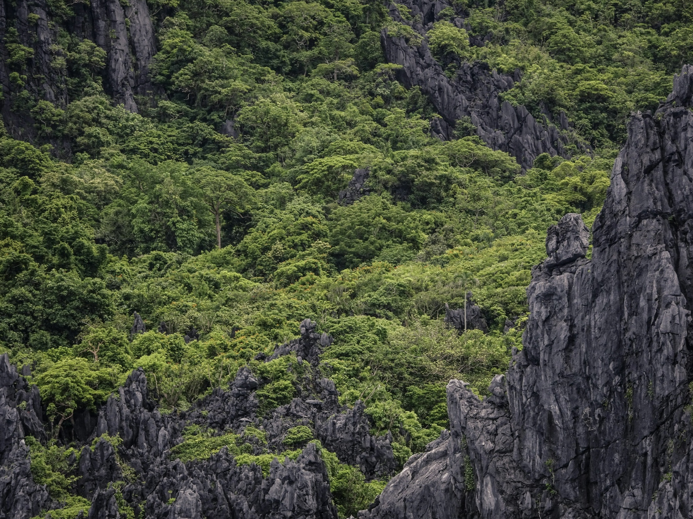
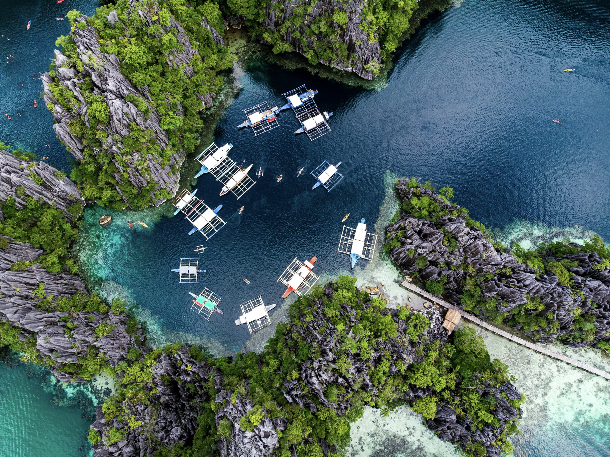
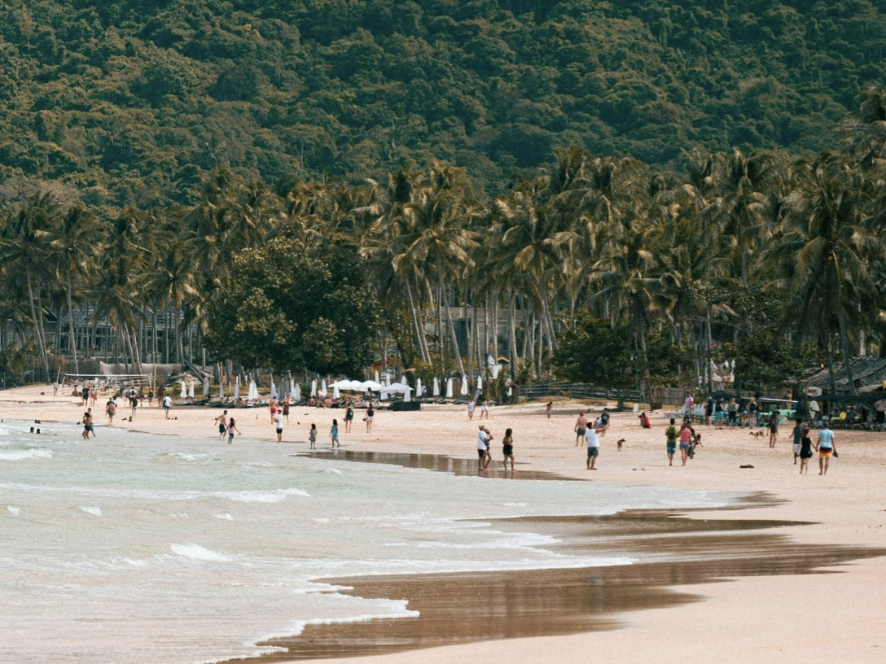
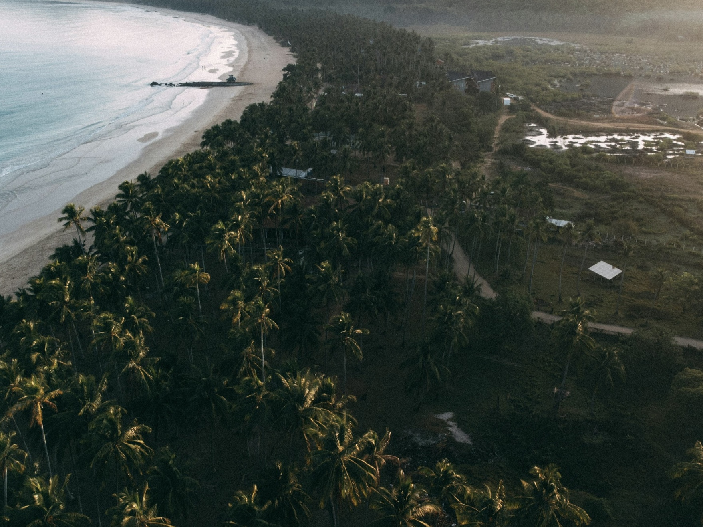
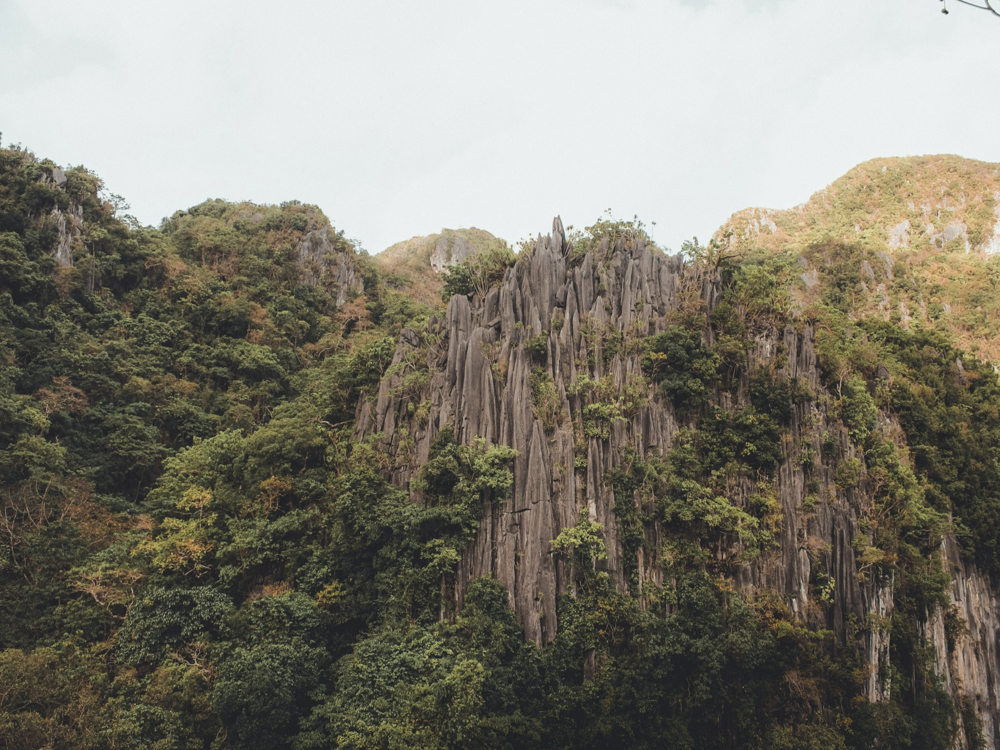

EL NIDO
| Located | Famous For | Travel Hours From Manila | Activities |
|---|---|---|---|
| El Nido, Palawan Philippines | Stunning limestone cliffs, clear turquoise waters, and vibrant marine life | Around 1.5 hours by flight | Island hopping, snorkeling, scuba diving, kayaking, and hiking |








| Travel Tips |
|---|
|
Best Time to Visit The ideal time to visit El Nido is from November to May, during the dry season. This ensures clear skies and calm waters for island hopping and other outdoor activities. |
|
How to Get There Fly from Manila to El Nido Airport (approximately 1.5 hours). Alternatively, you can fly to Puerto Princesa and take a van or bus to El Nido, which takes around 4-6 hours. |
|
Where to Stay Bring lightweight clothing, swimwear, and a good pair of sandals for the beach. Don’t forget essentials like sunscreen, a hat, a reusable water bottle, and a waterproof bag for your belongings while island hopping. |
|
Pack Light, Pack Smart Wear comfortable clothing and sturdy hiking shoes, as the trek can be challenging. Don’t forget essentials like sunscreen, a hat, and plenty of water. A lightweight backpack is useful for carrying your gear during the hike. |
|
Join Island Hopping Tours Most visitors explore the area through island hopping tours (A, B, C, and D packages), which take you to the best spots for snorkeling, swimming, and relaxation. Ensure to book with reputable operators. |
|
Try Local Snacks Sample fresh seafood and local dishes at beachfront restaurants. Don’t miss out on trying "kare-kare" (a Filipino oxtail stew) and "halo-halo" (a popular dessert) from local eateries. |
|
Respect the Environment Help preserve El Nido’s natural beauty by practicing sustainable tourism. Avoid single-use plastics, dispose of waste properly, and be mindful of marine life while snorkeling or diving. |